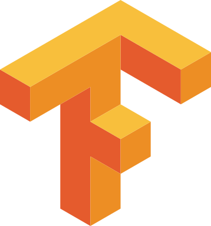

🧠 Victor'IA Project
Développement d'un Small Language Model (SLM) optimisé pour des tâches spécifiques

À propos du projet
Victor'IA est un projet de recherche et développement visant à créer un Small Language Model (SLM) optimisé pour des tâches spécifiques. Contrairement aux grands modèles de langage (LLM) qui nécessitent d'importantes ressources de calcul, Victor'IA est conçu pour être léger, efficient et spécialisé.
Ce projet s'inscrit dans une démarche d'expérimentation pour rendre l'intelligence artificielle plus accessible et performante sur des tâches ciblées, tout en réduisant significativement l'empreinte énergétique et les ressources nécessaires.
Objectifs du projet
🎯 Spécialisation
Développer un modèle de langage hautement spécialisé dans un domaine précis, permettant d'obtenir des performances supérieures aux modèles généralistes sur des tâches spécifiques.
⚡ Efficience
Optimiser l'architecture du modèle pour réduire sa taille et sa consommation de ressources, tout en maintenant des performances élevées dans son domaine de spécialisation.
🧪 Expérimentation
Explorer de nouvelles techniques de distillation de connaissances et d'architectures de réseaux de neurones pour améliorer l'efficacité des modèles de langage.
Approche technique
🔄 Architecture hybride
Victor'IA utilise une architecture transformeur modifiée, combinant attention locale et globale pour optimiser le traitement des contextes de différentes tailles.
📚 Distillation de connaissances
Application de techniques de distillation pour transférer les connaissances de modèles plus grands vers notre SLM compact.
🛠️ Fine-tuning spécifique
Processus d'apprentissage en plusieurs étapes avec des ensembles de données soigneusement sélectionnés pour maximiser la performance sur les tâches cibles.
Technologies Utilisées
-
 Python
Python
-
 PyTorch
PyTorch
-
 Hugging Face
Hugging Face
-
 TensorFlow
-
 Deep Learning
Deep Learning
-
 Docker
Docker
Détails Techniques
- Taille du modèle: 300M - 1B paramètres
- Contexte: 2048-4096 tokens
- Architecture: Transformeur modifié
- Optimisation: Quantification INT8/FP16
- Inférence: CPU/GPU optimisé
État du projet
- Avancement 5%
- Phase Conception
- Début Juin 2025
- Équipe 1 personne
Feuille de route
Recherche et conception
Exploration des architectures et définition des objectifs
Premier prototype
Implémentation d'un modèle de base et tests initiaux
Optimisation et spécialisation
Fine-tuning et optimisation pour des cas d'usage spécifiques
Version bêta
Déploiement d'une version de test pour recueillir des retours
Défis et perspectives
Compromis taille/performance
L'un des défis majeurs est de trouver l'équilibre optimal entre la taille réduite du modèle et le maintien de performances acceptables. Nos recherches explorent différentes techniques de compression et d'élagage pour y parvenir.
Spécialisation vs généralisation
Déterminer le niveau idéal de spécialisation pour maintenir une utilité pratique tout en optimisant les performances sur les tâches cibles représente un défi permanent pour ce projet.
Applications potentielles
Les SLMs comme Victor'IA offrent un potentiel considérable pour des applications embarquées, les appareils à ressources limitées, et les cas d'usage nécessitant une réponse rapide sans dépendance au cloud.
Ressources et visualisations